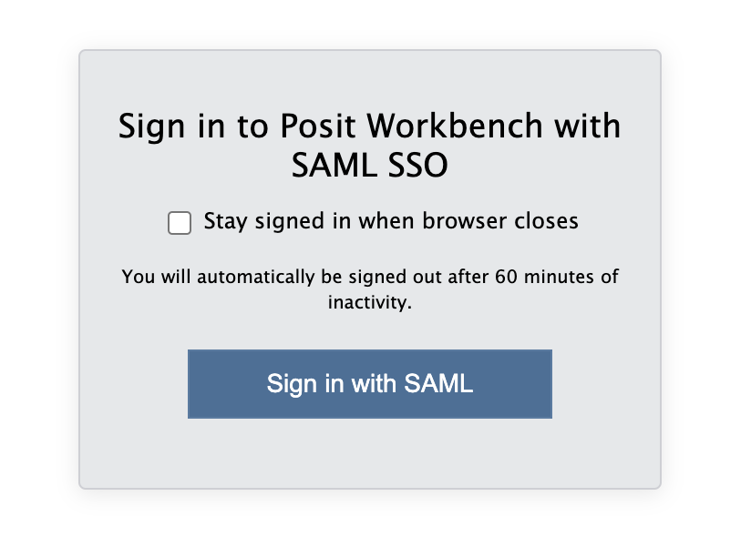
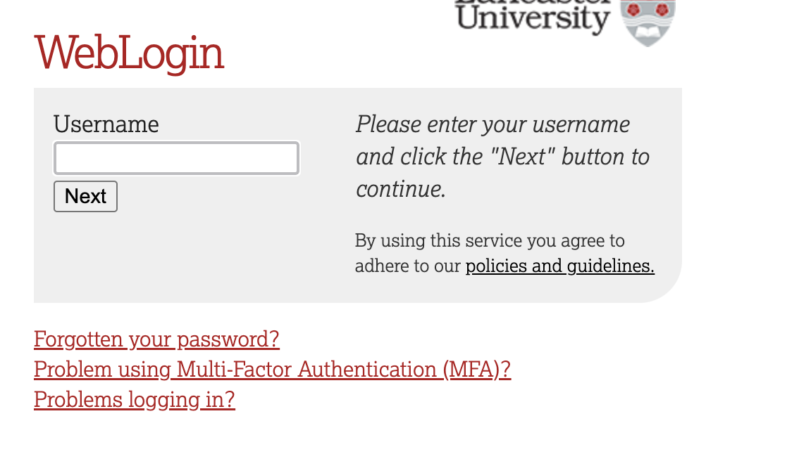
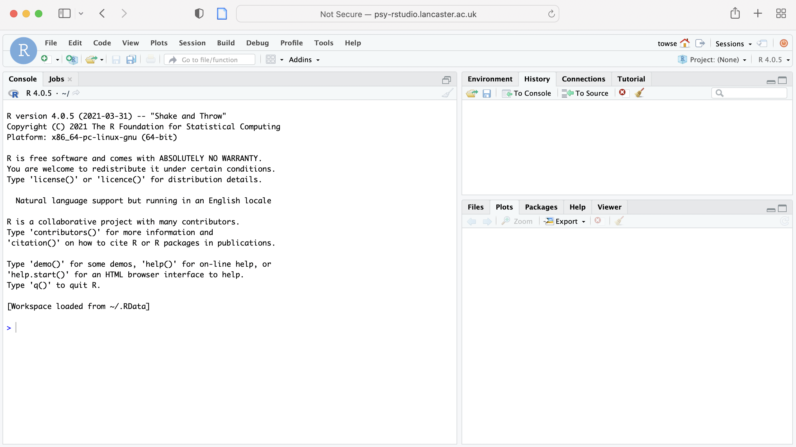

10 + 30 Week 1. Introducing Data
Written by Padraic Monaghan
1.1 Overview
This week, there are three mini lectures, and then a practical workbook to get you going with R-studio.
Before the practical on Tuesday, please try to work through the practical workbook (in the first practical we will form groups of people to work together on the workbooks, for now you can work on the practical workbook individually or with anyone else on the course you are in touch with!).
Bring your questions (and/or answers) to the practical.
1.2 Learning Goals
By the end of Week 1, you should be able to:
Understand the importance of data analysis and statistics
Identify types of data in psychology (nominal, ordinal, interval, ratio)
Understand means and standard deviations
Understand standardized scores (Z-scores)
Use R-studio to begin to manipulate data, investigate means and standard deviations, and convert scores into Z-scores
1.3 Lectures and slides
1.3.1 Lectures
Watch Lecture week1 part1:
Watch Lecture week1 part2, stop halfway through and do the Lecture week1 part2 quiz (not assessed), by clicking here Then come back and watch the end of Lecture week 1 part2:
Watch Lecture week1 part3:
Take the quiz on the lecture material (not assessed), by clicking here
1.3.2 Lecture slides
Download the lecture slides for
1.4 Practical Materials
1.4.1 Workbook
In your group (or on your own until you’ve formed a group), work through this workbook, note any problems and questions you have, and come prepared to the practical class to go through the tasks and ask your questions.
If you’ve done statistics using R-studio before then Parts 1 and 2 will be just revision for you. In which case, Part 3 is where you can focus your work.
Part 1 of this workbook reproduces what you saw in the week 1 part 3 lecture.
Part 2 gives you some more exercises in using R studio for finding means, standard deviations, z scores, and drawing histograms.
Part 3 provides some more extended tasks you can do to practise exploring what R -studio can do and develop your skills further. If you are new to R-studio then parts 1 and 2 cover what you need to know, and Part 3 contains some more extending, optional exercises.
There are answers provided after each question. It is really important that you try to answer the questions yourself first, and then check your answers against ours. If you go straight to the answer you’ll be very quick in getting through the workbook but you won’t unfortunately learn very much: Smith, G. (1998). Learning statistics by doing statistics, Journal of Statistics Education, 6:3.
1.4.1.1 Part One: repeat the steps from lecture 1 part 3
Task One: Open Rstudio
- Startup Rstudio
To log in to the R server, first make sure that you have the VPN switched on, or you will need to be connected to the university network (Eduroam). To set up the VPN, follow ISS instructions here or connecting to Eduroam here.
When you are connected, navigate to https://psy-rstudio.lancaster.ac.uk, where you will be shown a login screen that looks like the below. Click the option that says “Sign in with SAML”.

This will take you through to the University login screen, where you should enter your username (e.g. ivorym) and then your university password. This will then redirect you to the R server where you can start using RStudio!


Note
If you have already logged in through the university login, then you may not see the username/password screen. When you click login, you will be redirected straight to RStudio. This is because the server shares the login information securely across the university.
What does RStudio look like?
When RStudio starts, it will look something like this: 
RStudio has three panels or windows: there are tabs for Console (taking up the left hand side), Environment (and History top right), Current file (bottom right). You will also see a 4th window for a script or set of commands you develop, also (on the left hand side).
Task Two: using the console
Tip
Text that is highlighted with a grey background denotes code, rather than typical prose. Code is different to other forms of writing, such as essays, because the syntax, order and words need to be quite specific. For some longer chunks of code, as you will see below, they are formatted slightly differently.
- In the “console” part of the R window, next to the >, type
10 + 30. Press return.
Tip
If you hover your mouse over the box that includes the code snippet in this webpage, a ‘copy to clipboard’ icon will appear in the top right corner of the box. Click that to copy the code. Now you can easily paste it into your script.
It should give you the answer 40.
- In the console, type
a <- 40and press Return.
a <- 40 Now type
aand press return. It should give you the answer 40.ais called an object, think of it like a bucket that you can keep a number, or some numbers, or actually all kinds of stuff in.Now let’s look at a function,
sqrt.sqrtis a function that takes the square root of whatever is inside the brackets. In the console, typesqrt(13). Press Return.Now find the square root of the object
aby typingsqrt(a). Press return.
Task Three: finding distributions
- Make a new object
b, and put the following list of children’s attachment scores into it
b <- c( 4, 1, 5, 3, 8, 2, 2, 6, 8, 5, 4, 1, 6, 5, 4, 5, 7, 9, 10, 1, 1, 3, 5, 4, 6, 4, 8, 6, 5, 5, 7, 8, 9, 8, 8, 2, 1, 4, 3, 2, 5, 1, 5, 6, 8, 6, 7, 2, 7)Check it works by typing
b, press return.Find the mean of these numbers by typing
mean(b).Find the median of these numbers by typing
median(b).Find the standard deviation of these numbers by typing
sd(b).Draw a histogram of these numbers by typing
hist(b).
Task Four: z scores
- Make a new object b_z and assign to it the z scores of the values from b:
b_z <- scale(b)Check that it worked by typing
b_z.Draw a histogram of b_z by typing
hist(b_z).
1.4.1.2 Part Two: extra practice
Task Five: investigating distributions
- Let’s make three new objects, with the marks from three people’s university masters courses. They are called annie, saj, and carrie and they took 10 courses each. We use the special notation
c()to indicate a list, each number in the list is separated by a comma. Type the following into the console:
annie <- c(55, 95, 85, 65, 65, 85, 65, 95, 65, 75)
saj <- c(65, 85, 95, 75, 65, 55, 55, 75, 95, 85)
carrie <- c(75, 65, 95, 95, 55, 85, 75, 55, 95, 55)- Who has the highest average (mean) score for their course?
- Who has the most variable scores for their course?
- What is the median score for each student?. What does this mean about the distribution of each students’ scores? Use the function
hist()to draw the distributions to help you see.
Task Six: standardised scores: Z scores
- Make a new object called
annie_zand use the functionscaleto convert annie’s scores to z-scores: in the console type:
annie_z <- scale(annie)- What is the mean and standard deviation of annie_z’s standardised scores?
- You can have a look at the standardised scores of annie, by just typing
annie_z. What z score corresponds to annie’s highest initial score of 95?
- Draw a histogram of annie’s standardised scores, in the console type
hist(annie_z). Between which z values are the highest number of scores?
- Bonus extra: If you want to find out the proportion of scores lower than a particular score you can do it like this in R-studio:
pnorm(x)where x is the z-score you’re interested in. What is the proportion of scores lower than annie’s highest grade score?
1.4.1.3 Part Three: Extras
If you’ve whizzed through the previous tasks, then you can move on to the following activities to explore further the functionality of R studio.
Task Seven: Exploring operators.
So far, we’ve just looked at + as an operator. Go to this page: https://www.statmethods.net/management/operators.html
In the console, assign the object
dto be 100 multiplied by 246.In the console, assign the object
eto be 84 divided by 32.1.Assign the variable
fto 8 to the power of 4 (in R this is called exponentiation).What is the result of
dadded toeall divided byf
Task Eight: Exploring functions
So far, we’ve just looked at the square root function sqrt(). Go to this page: https://www.statmethods.net/management/functions.html
- What is the result of
abs(-5.3)? What does theabsfunction do?
Using the
seq()function, generate a sequence of numbers from 0 to 30 in intervals of 3.Assign the sequence generated in step 30 to a new object. Now compute the mean of the sequence of numbers. (remember that objects can be a single number, or a sequence of numbers (called an array or a vector) or anything you want to put into it – remember, think of objects as buckets).
- Assign the sequence generated in 31 to a new object. Now compute the mean of the sequence of numbers. (remember that objects can be a single number, or a sequence of numbers (called an array or a vector) or anything you want to put into it – remember, think of objects as buckets).
Task Nine: Exploring others’ data
Have a look at this article: Scullin, M. K., Gao, C., & Fillmore, P. (2021). Bedtime music, involuntary musical imagery, and sleep. Psychological Science, 32(7), 985-997. https://journals.sagepub.com/doi/10.1177/0956797621989724
Abstract Many people listen to music for hours every day, often near bedtime. We investigated whether music listening affects sleep, focusing on a rarely explored mechanism: involuntary musical imagery (earworms). In Study 1 (N = 199, mean age = 35.9 years), individuals who frequently listen to music reported persistent nighttime earworms, which were associated with worse sleep quality. In Study 2 (N = 50, mean age = 21.2 years), we randomly assigned each participant to listen to lyrical or instrumental-only versions of popular songs before bed in a laboratory, discovering that instrumental music increased the incidence of nighttime earworms and worsened polysomnography-measured sleep quality. In both studies, earworms were experienced during awakenings, suggesting that the sleeping brain continues to process musical melodies. Study 3 substantiated this possibility by showing a significant increase in frontal slow oscillation activity, a marker of sleep-dependent memory consolidation. Thus, some types of music can disrupt nighttime sleep by inducing long-lasting earworms that are perpetuated by spontaneous memory-reactivation processes.
The data from the study is available on this osf website. The data we will look at is from the first study, the data set called “Earworm_MTurk_OSF.sav” on the osf site. These data are saved in spss format, which is not great for R-studio. We can still read it in, though, using a function called spss.get()
Browse the paper to see what it is about. Focus on Study 1.
From the osf website download the data file: Earworm_MTurk_OSF.sav, and also download the codebook file: Earworm_MTurk_Codebook.xlsx. The codebook tells you what each of the measures are in the data file.
Load the data into R-studio: in the bottom right panel of R-studio, click on Upload, and browse to the Earworm_MTurk_OSF.sav file. It should then appear in the list of files in that bottom right panel.
That step means we can access the data, but it isn’t yet loaded into R-studio.
So, next load the data file into R-studio so we can work on it. You might have noticed that the data file is in SPSS format (that’s what the .sav ending to the file means). But, we can still load that in to R-studio.
To do that first, load the library Hmisc: library(Hmisc)
library(Hmisc)- Then, use the function spss.get():
dat <- spss.get("Earworm_MTurk_OSF.sav")That should have made you a new object in R-studio called “dat” which contains the data from the study.
Next, we can have a look at the data. Here are a few questions to get you going:
- How many male, how many female participants?
- How many people never have earworms in the middle of the night?
- For the Stanford Sleepiness Scale, how many participants felt “Somewhat foggy, let down”?
- What was the mean, SD and range of age of the participants? Does your calculation of mean age correspond to that given in the paper?
- Can you work out the mean age of the male and female participants separately?
- Explore the data, see if you can remember tasks for separating different subgroups, graphing relations, comparing groups.
1.4.2 Data
(There are no data that you need for today’s practical, other than the link to the data for the earworm study, but when there are data sets you need, you will find them in this data section.)
1.4.3 Answers
The answers to the workbook appear below each question in the workbook, above, so you can check your answers.
It’s really important for your learning that you have a go first of all at the workbook before looking at the answers.
1.5 Extras
Optionally, here are some videos on the importance of thinking critically about data and statistics, more important now than ever:
Mona Chalabi on 3 ways to spot a bad statistic.
Susan Etlinger on the importance of understanding data.
Luciana Padua on how to think critically about patterns in data.